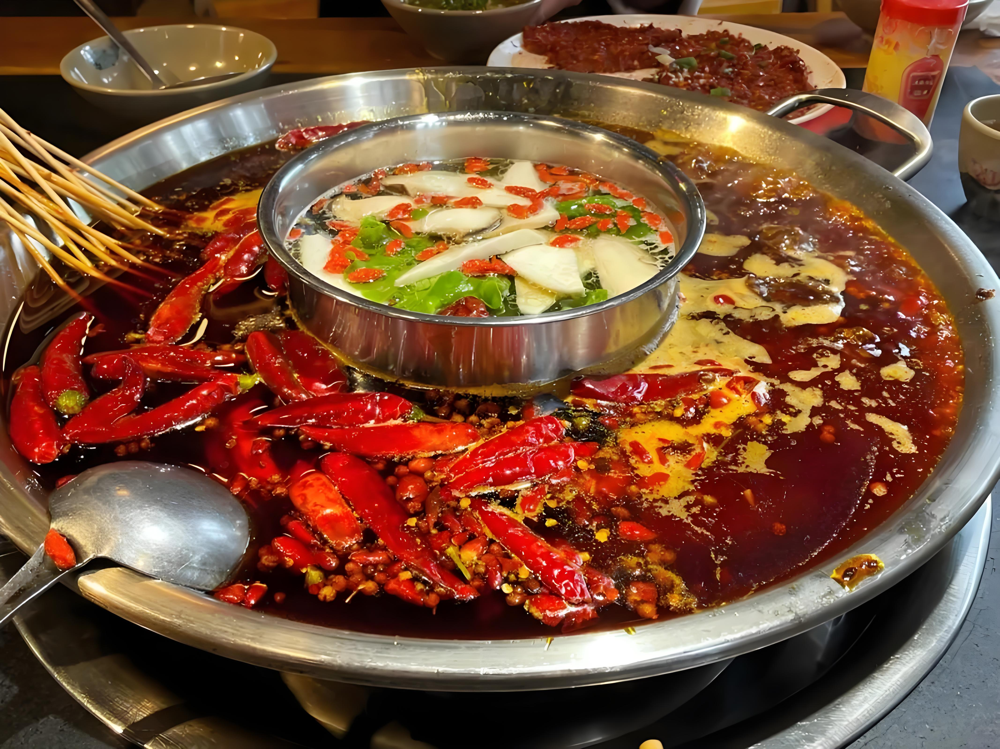
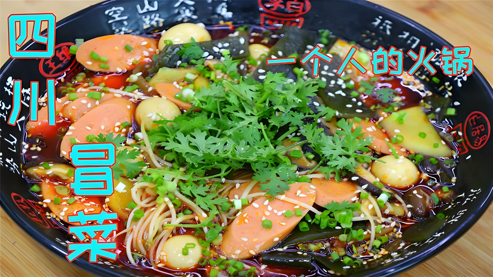
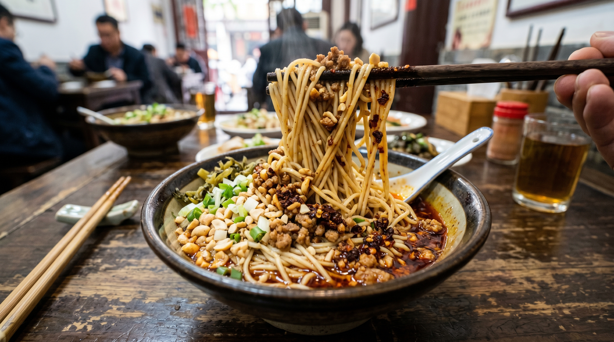
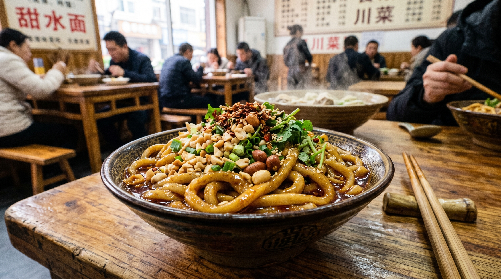
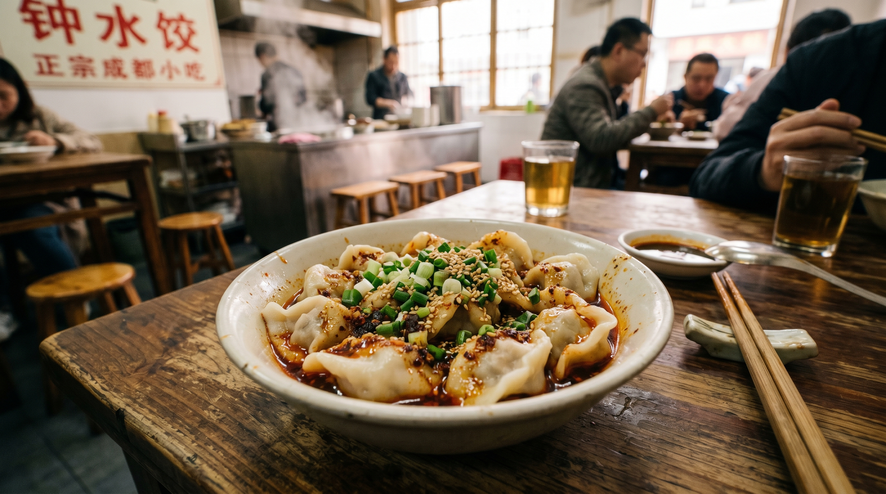
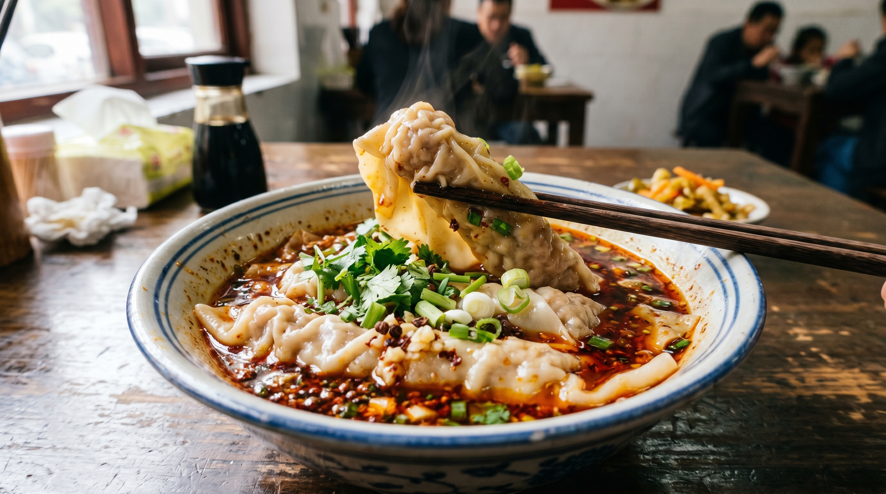

For International Travelers
Cost: ¥3000 | Spring Festival Ready | Giant Pandas & Sichuan Cuisine
Author: Mu Niao | Updated 2026
Chengdu, where old tea houses waft with the aroma of covered-bowl tea, hot pot simmers with spicy red oil, and ancient lanes brim with lively local vibes. You can experience the ultimate comfortable life in Chengdu in just three days! Here are the hard-learned lessons costing 3000 yuan and a detailed 3-day 2-night itinerary for your Spring Festival trip to Chengdu!
Morning: Don't sleep in! Head to Kuanzhai Alleys first. Composed of Kuan Alley, Zhai Alley and Jing Alley, the old courtyards with gray bricks and black tiles are perfect for taking photos.
Afternoon: Go to Kuixinglou Street or Xiaotong Alley nearby. There are various interesting coffee shops and small stores with a more relaxed atmosphere.
Evening: Must visit Jinli Ancient Street, preferably at dusk when the lanterns are lit up – it's especially picturesque. Wuhou Shrine is nearby; the red walls and bamboo shadows outside are great for photos.
Morning: The top priority today is the Chengdu Giant Panda Breeding Research Base. Arrive as soon as it opens at 7:30 AM – pandas are most active in the morning, eating bamboo and playing. Most pandas sleep in the afternoon.
Afternoon: Visit Du Fu Thatched Cottage – quiet bamboo forests and ancient thatched cottages let you feel the peaceful poetic atmosphere of traditional Chinese culture.
Evening: Find an authentic hot pot restaurant near the cottage or back in the city center – almost all local hot pot tastes great.
Morning: Visit Chunxi Road and Taikoo Li – the fashion center of Chengdu. Experience the modern urban vibe and see the famous climbing giant panda sculpture on top of IFS. Taikoo Li is an open‑air block with unique architectural design, and the ancient Daci Temple is inside.
Afternoon: Spend the afternoon at People’s Park. Must visit Heming Tea House – order a cup of covered‑bowl tea, enjoy sunflower seeds, and experience the slow, relaxing local lifestyle.






Zhong Dumplings, Dan Dan Noodles, Long Wontons, Sweet Water Noodles, Guo Kui, Egg Cakes. Go to Jianshe Road or Kuixinglou Street for the best selection.
Pro Tip: Follow local people’s long lines at small community restaurants – the food is always authentic and delicious.